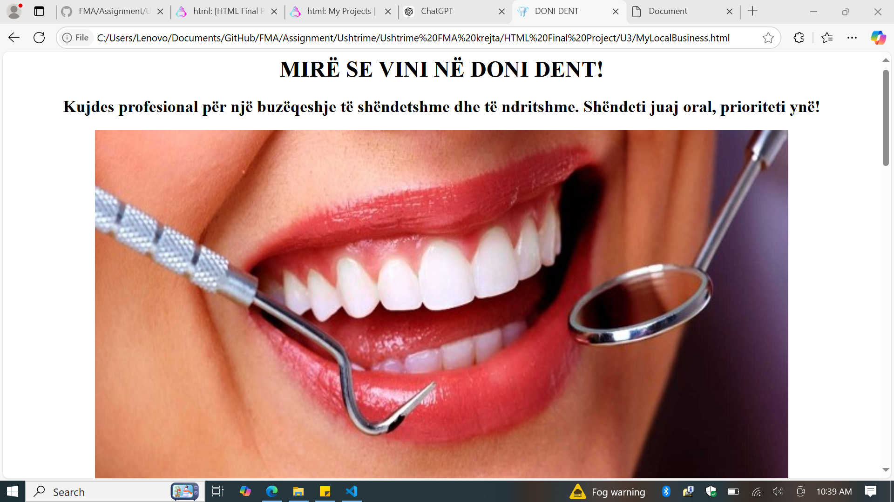
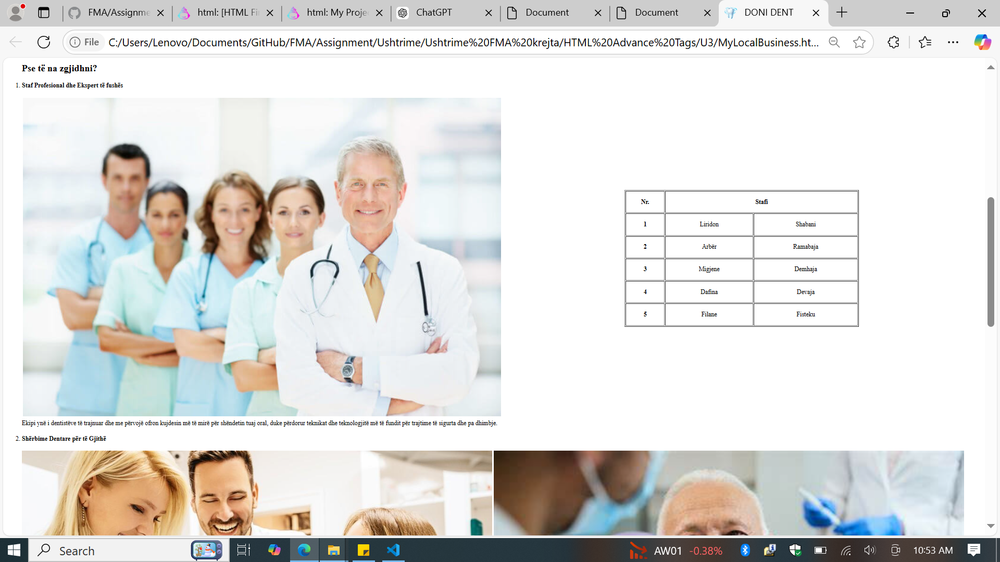
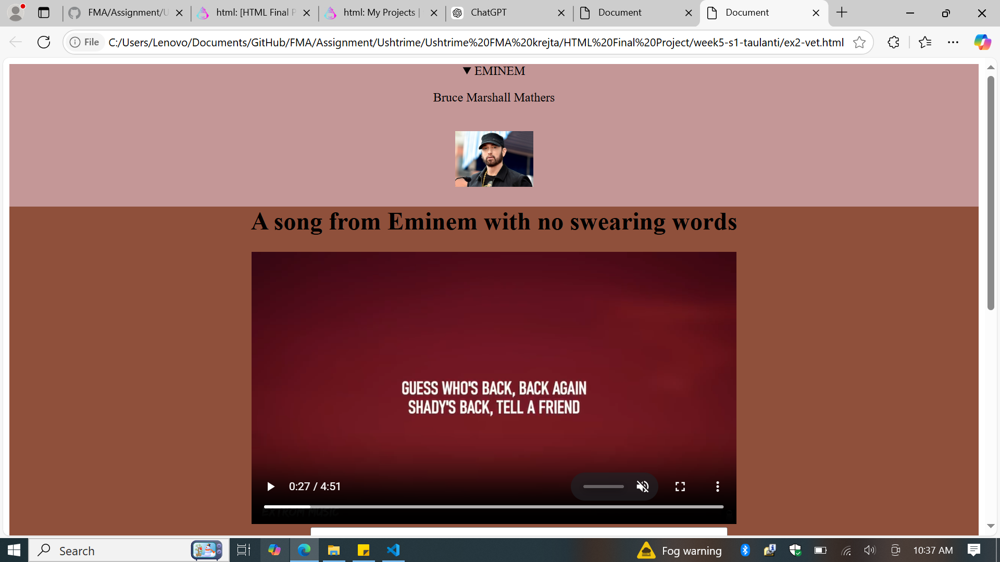
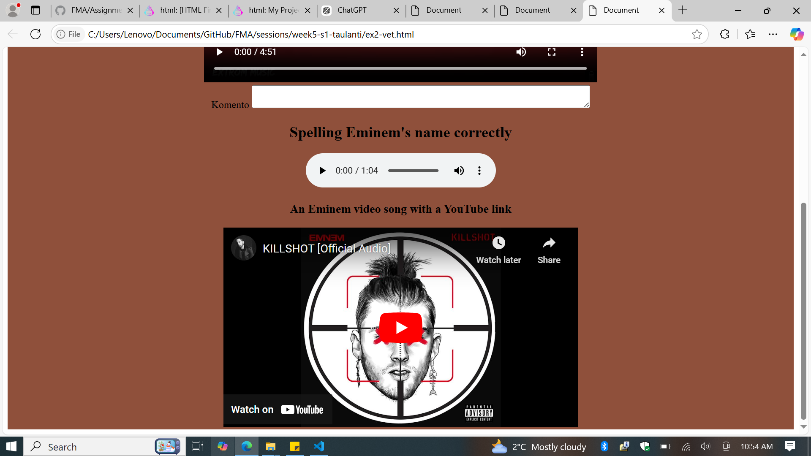
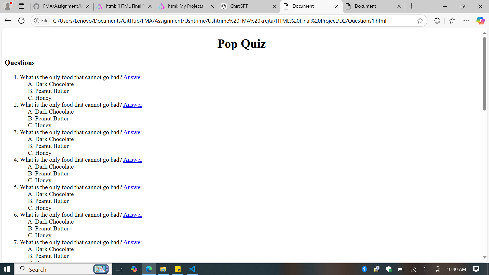
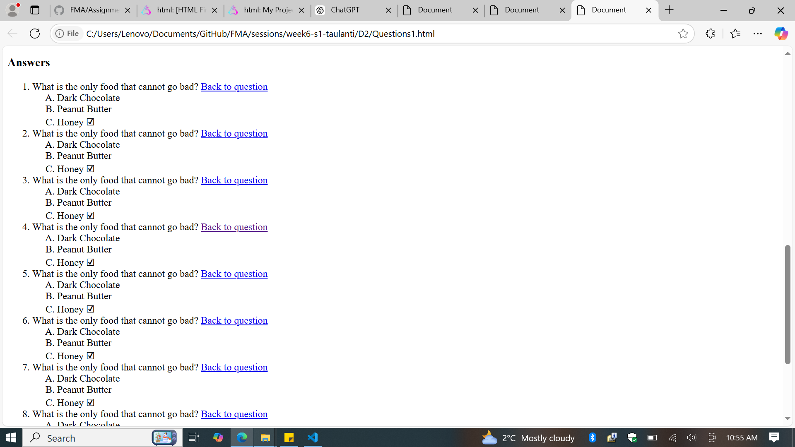

Dentist Website
This website is a promotional page for "DONI DENT," a professional dental clinic.
It emphasizes delivering healthy and bright smiles, prioritizing oral health as its main
focus. The webpage features an image of a smiling mouth being examined with dental tools,
symbolizing the clinic's commitment to quality dental care.


Biography & Music Page
This page focuses on Eminem, also known as Bruce Marshall Mathers. It provides a visual
introduction to the artist with a photograph and includes a music video of one of his
songs. The page's unique selling point is showcasing a clean version of his work,
explicitly highlighting a song with no profanity.


Pop Quiz Page
This simple educational webpage offers a "Pop Quiz" format with repeated questions.
Each question provides multiple-choice answers, encouraging users to engage with the
content and test their knowledge. The design is minimal, focusing on text for a
straightforward user experience.

